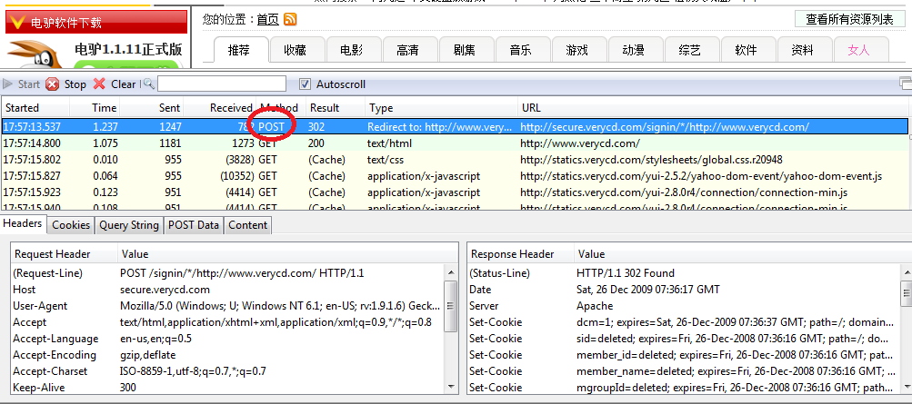
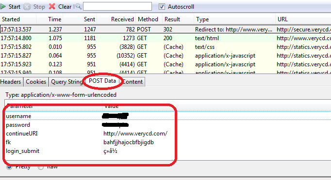

学用python也有3个多月了，用得最多的还是各类爬虫脚本：写过抓代理本机验证的脚本，写过在discuz论坛中自动登录自动发贴的脚本，写过自动收邮件的脚本，写过简单的验证码识别的脚本，本来想写google music的抓取脚本的，结果有了强大的gmbox，也就不用写了。
-
这些脚本有一个共性，都是和web相关的，总要用到获取链接的一些方法，再加上simplecd这个半爬虫半网站的项目，累积不少爬虫抓站的经验，在此总结一下，那么以后做东西也就不用重复劳动了。
-
1.最基本的抓站
import urllib2 content = urllib2.urlopen('http://XXXX').read()
-
2.使用代理服务器
这在某些情况下比较有用，比如IP被封了，或者比如IP访问的次数受到限制等等。
import urllib2 proxy_support = urllib2.ProxyHandler({'http':'http://XX.XX.XX.XX:XXXX'}) opener = urllib2.build_opener(proxy_support, urllib2.HTTPHandler) urllib2.install_opener(opener) content = urllib2.urlopen('http://XXXX').read()
-
3.需要登录的情况
登录的情况比较麻烦我把问题拆分一下：
-
3.1 cookie的处理
import urllib2, cookielib cookie_support= urllib2.HTTPCookieProcessor(cookielib.CookieJar()) opener = urllib2.build_opener(cookie_support, urllib2.HTTPHandler) urllib2.install_opener(opener) content = urllib2.urlopen('http://XXXX').read()
是的没错，如果想同时用代理和cookie，那就加入proxy_support然后operner改为
opener = urllib2.build_opener(proxy_support, cookie_support, urllib2.HTTPHandler)
-
3.2 表单的处理
登录必要填表，表单怎么填？首先利用工具截取所要填表的内容
比如我一般用firefox+httpfox插件来看看自己到底发送了些什么包
这个我就举个例子好了，以verycd为例，先找到自己发的POST请求，以及POST表单项：


-
可以看到verycd的话需要填username,password,continueURI,fk,login_submit这几项，其中fk是随机生成的（其实不太随机，看上去像是把epoch时间经过简单的编码生成的），需要从网页获取，也就是说得先访问一次网页，用正则表达式等工具截取返回数据中的fk项。continueURI顾名思义可以随便写，login_submit是固定的，这从源码可以看出。还有username，password那就很显然了。
-
好的，有了要填写的数据，我们就要生成postdata
import urllib postdata=urllib.urlencode({ 'username':'XXXXX', 'password':'XXXXX', 'continueURI':'http://www.verycd.com/', 'fk':fk, 'login_submit':'登录' })
-
然后生成http请求，再发送请求：
req = urllib2.Request( url = 'http://secure.verycd.com/signin/*/http://www.verycd.com/', data = postdata ) result = urllib2.urlopen(req).read()
-
3.3 伪装成浏览器访问
某些网站反感爬虫的到访，于是对爬虫一律拒绝请求
这时候我们需要伪装成浏览器，这可以通过修改http包中的header来实现
#…
headers = { 'User-Agent':'Mozilla/5.0 (Windows; U; Windows NT 6.1; en-US; rv:1.9.1.6) Gecko/20091201 Firefox/3.5.6' } req = urllib2.Request( url = 'http://secure.verycd.com/signin/*/http://www.verycd.com/', data = postdata, headers = headers ) #...
-
3.4 反”反盗链”
某些站点有所谓的反盗链设置，其实说穿了很简单，就是检查你发送请求的header里面，referer站点是不是他自己，所以我们只需要像3.3一样，把headers的referer改成该网站即可，以黑幕著称地cnbeta为例：
#... headers = { 'Referer':'http://www.cnbeta.com/articles' } #...
headers是一个dict数据结构，你可以放入任何想要的header，来做一些伪装。例如，有些自作聪明的网站总喜欢窥人隐私，别人通过代理访问，他偏偏要读取header中的X-Forwarded-For来看看人家的真实IP，没话说，那就直接把X-Forwarde-For改了吧，可以改成随便什么好玩的东东来欺负欺负他，呵呵。
-
3.5 终极绝招
有时候即使做了3.1-3.4，访问还是会被据，那么没办法，老老实实把httpfox中看到的headers全都写上，那一般也就行了。
再不行，那就只能用终极绝招了，selenium直接控制浏览器来进行访问，只要浏览器可以做到的，那么它也可以做到。类似的还有pamie，watir，等等等等。
-
4.多线程并发抓取
单线程太慢的话，就需要多线程了，这里给个简单的线程池模板
这个程序只是简单地打印了1-10，但是可以看出是并发地。
from threading import Thread from Queue import Queue from time import sleep #q是任务队列 #NUM是并发线程总数 #JOBS是有多少任务 q = Queue() NUM = 2 JOBS = 10 #具体的处理函数，负责处理单个任务 def do_somthing_using(arguments): print arguments #这个是工作进程，负责不断从队列取数据并处理 def working(): while True: arguments = q.get() do_somthing_using(arguments) sleep(1) q.task_done() #fork NUM个线程等待队列 for i in range(NUM): t = Thread(target=working) t.setDaemon(True) t.start() #把JOBS排入队列 for i in range(JOBS): q.put(i) #等待所有JOBS完成 q.join()
5.验证码的处理
碰到验证码咋办？这里分两种情况处理：
-
1.google那种验证码，凉拌
-
2.简单的验证码：字符个数有限，只使用了简单的平移或旋转加噪音而没有扭曲的，这种还是有可能可以处理的，一般思路是旋转的转回来，噪音去掉，然后划分单个字符，划分好了以后再通过特征提取的方法(例如PCA)降维并生成特征库，然后把验证码和特征库进行比较。这个比较复杂，一篇博文是说不完的，这里就不展开了，具体做法请弄本相关教科书好好研究一下。
-
3.事实上有些验证码还是很弱的，这里就不点名了，反正我通过2的方法提取过准确度非常高的验证码，所以2事实上是可行的。
-
6.总结
基本上我遇到过的所有情况，用以上方法都顺利解决了，不太清楚还有没有其他漏掉的情况，所以本文到这里就完成了，以后要是碰上其他情况，再补充相关方法好了：）
本文后续见： http://obmem.info/?p=753
Python有没有Perl的那种WWW::Mechanize的模块？那玩意用来作抓取特别好用。
有的，就叫mechanize，不过我觉得python语法用来抓站本来就够简单了，用mechanize有点多此一举，还是觉得不如正则表达式+urllib2来得方便高效。
而且mechanize还不够强，依旧处理不了javascript什么的，真的碰上难度大的站点，还是得自己分析网站的js代码，给出相应调整；或者干脆用更强大的selenium。
不错，python简单的多线程确实适合爬虫，有正则，基本上就没什么大问题了
Pingback: Tweets that mention 用python爬虫抓站的一些技巧总结 | Observer专栏杂记 -- Topsy.com
写得真不错 正好在学习这方面
感谢你的分享
宝贵的经验，太有用了，谢谢Observer！
PS：我那半成品gmbox也被提到了，哈哈。。。
请问 centos的vps能否搭建SimpleCD的运行环境
你好，我是菜鸟，弱弱的问一下你的“最基本的抓站”里面代码运行下，会产生什么样的效果，我这边没一点反应，我网址里填的www.g.cn
Slam dunkin like Shuaqille O’Neal, if he wrote informative articles.
推特上看过来的,感觉好悬
博主不会那么俗的，应该在家写爬龙脚本准备把大家都吓死。。。
obmem.info/old的文章都很实用，让我了解了不少东西，强烈建议博主更新频繁一点
大哥~ 能不能做一个 完整的例子呢
对我们菜鸟来说是莫大的帮助~
谢谢谢谢谢谢谢谢谢谢谢谢谢谢谢谢
不错，我现在用的是pycurl，用多线程调试起来很麻烦，pycurl的multi下载也不错。
我现在的http://www.frombook.com就是这么做的
多谢分享,总结的真的很好,忍不住转载了,保留了署名和链接.
如有冒犯,请告诉我,我会撤贴.
http://52xenos.blogspot.com/2010/02/zt-python.html
正则表达式等工具截取返回数据中的fk项
有这样的工具不？
正则表达式是python的一个模块，见我最新发的VeryCD灌水机源码
Pingback: python验证码识别之Discuz(一) | Observer专栏杂记
Pingback: 使用python爬虫抓站的一些技巧总结：进阶篇 | observer专栏杂记
宝贵经验！谢谢分享！~
请问遇到那种像新浪微博一样的，网页里面没有form元素，而是写在一个div里面的登陆网站。要怎么让爬虫登陆进去呢？
请问这可以用来抓discuz的论坛吗
Pingback: 用python爬虫抓站的一些技巧总结 - Frandy's Blog
000000
it’s bad
Pingback: 用python爬虫抓站的一些技巧总结 | 世界是平的
Pingback: Python | 辉华
Pingback: 使用python爬虫抓站的一些技巧总结：进阶篇 （转） | 辉华